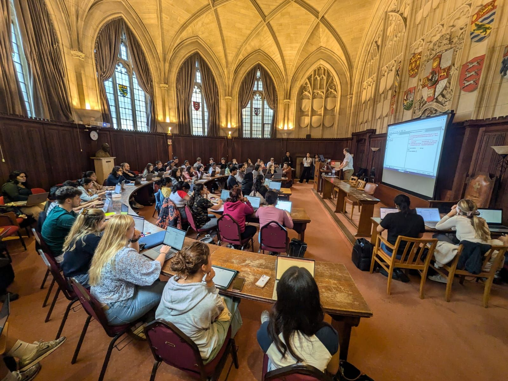
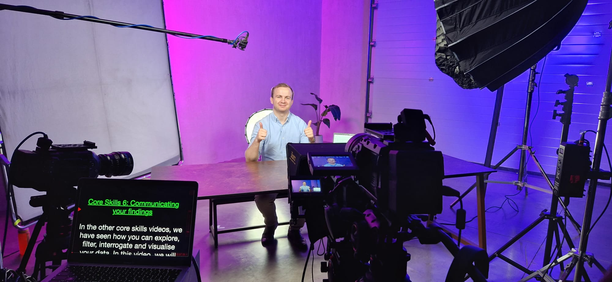

I really love teaching and I've been fortunate enough to be involved with teaching throughout my masters, PhD and current role at JGI. See below for details:

Alongside my JGI colleagues, I have helped teach introduction Python courses for MSc Bioinformatics students as well as PhD students on the Technology Enhanced Chemical Synthesis, Practice-Oriented Artifical Intelligence programs and some researchers from the ESRC Centre for Sociodigital Future. I have taught Beginners Python, Intermediate Python, Intro to Data Analysis in Python and Applied Data Analysis in Python both as session lead and in class helper. The original version of these courses, taught by Matt Williams, were how I learnt to code during my PhD. You can see all the teaching notes we used here!
During my PhD I ran tutorials for first year Linear Algebra. I studied linear algebra extensively during my undergraduate but it took me far longer to develop a robust intuitive understanding of the concepts involved. Alongside giving hints for and marking homework, I tried to flesh out a more geometric intuition for the concepts, inspired by the Essence of linear algebra series<\a> by YouTuber 3Blue1Brown. One of my fondest memories on my entire PhD is bumping into one of my undergraduate students two years later as they were coming to the end of their degree and being told how much of a positive impact I made on their development during their first year :)
During my PhD I ran tutorials for third year Random Matrix Theory. I was responsible for giving hints for and marking homework (including formative assessments) as well as explaining key ideas from classes. Random Matrix Theory was a core part of my PhD (my supervisor, Professor Nina Snaith, was teaching the module) so I was able to relate ideas in class to real research. I had the additional challenge of running all of my sessions online during the pandemic. Teaching an optional 9am class on Zoom and getting students to engage and ask questions was challenging but ultimately rewarding. Students eating breakfast or still in their PJs would share camera and interact and I fondly recall one session where due to the short homework sheet, I didn't have much content to go over. None of the students had any more questions for me and at the 20 minute mark I assured students they were not obligated to stay but I'd stick around if they had any more questions. As it was the height of the pandemic, they explained to me they had nothing better to do. So to keep them entertained I gave them a crash course on what my research was about and how it related to their studies!
As a masters student I ran tutorial for second year Probability. I was responsible for giving for and marking homewor as well as explaining key ideas from classes. Probability 2 was an interesting one for me because it's designed to prepare you for all possible future probability classes which means it covers a lot of things in a small amount of detail. When taking this course myself, it made it feel very directionless, but when I studied probability in later years I was grateful for the broad background. The fact that I didn't enjoy this class when I took it but was now doing my masters project in probability, as well as the fact that I was still technically an undergraduate when I was running these tutorials gave me quite a lot of common ground with students. This was my first time teaching at university and I enjoyed it a ton!
As the JGI point of contact for the Data Hazards project, I helped run sessions for masters students in scientific computing and education cohorts. I also have run data hazards events for active researchers and presented the Data Hazards project at HACA 2023 and RSS 2024 alongside the project founders and two dear friends of mine, Dr Natalie Zelenka and Dr Nina Di Cara.

Part of Cheltenham Science Festival, and supported by the Jean Golding Institute and CyberFirst, the DataFace project gives secondary school students and their teachers the skills and confidence to dive into an open dataset, find an issue that catches their interest, and tell a story with creative data visualisations. Along with boosting their data literacy and building essential data science skills, DataFace breaks the stereotype that data science is just for those who study IT or computer science. As part of the project, former JGI director Kate Robson Brown and data scientist James Thomas sat on the project steering group alongside representatives from Cheltenham Festivals and CyberFirst. With assistance from research software engineer Matt Williams they developed teaching resources, including core skills videos for teachers and pupils, dataset explainer videos, and the curated open datasets that the pupils go on to analyse. The JGI also engaged PhD students and postgraduate researchers to act as role models in the videos. I was one of these students in my final year as a PhD student! These resources have since been expanded with the help of me!
Through the Widening Participation office I reguarly gave outreach talks to school students ranging from ages 14-18. I give a talk entitled Weapons of Maths Destruction (based on the wonderful book by Cathy O'Neil of the same name), where I get students to design an algorithm for ranking, firing and hiring teachers using generalised linear models. I use the exercise to teach them about topics in data science as well as the drawbacks of automating decision making in some contexts. I have given talks online and in person both on campus at the University of Bristol and in schools in the southwest of England. I wrote about my experiences giving these outreach talks in a blog on the Data Ethics Club website on entitled “The G in GLMs sometimes stands for “Garbage” – what I learnt getting students to design algorithms for hiring and firing teachers”.